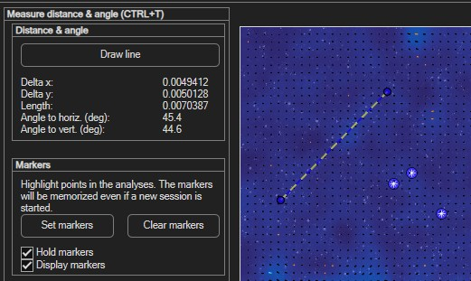

Markers / distance / angle
Two independent tools for annotating and measuring your images: a distance/angle ruler, and persistent point markers.
Open via Plot → Markers / distance / angle (Ctrl+T).

Measuring distance and angle
Click Draw line and draw across the two points you want to measure. The panel reports:
| Reading | Meaning |
|---|---|
| Delta x / Delta y | Horizontal and vertical offset between the two points. |
| Length | Straight-line distance. |
| Angle to horiz. (deg) | Angle relative to the horizontal. |
| Angle to vert. (deg) | Angle relative to the vertical. |
Placing markers
Markers highlight specific points of interest in the image.
- Click Set markers, then left-click each point you want to mark; right-click to finish.
- Display markers toggles their visibility.
- Click Clear markers to remove them all.
Markers can outlive a session
Enable Hold markers to keep your markers even after starting a
new session — they're only cleared when you restart PIVlab itself.
The Display average button shows the mean image across all loaded frames — handy for placing markers on a feature that's clearer in the time-averaged view than in any single frame.